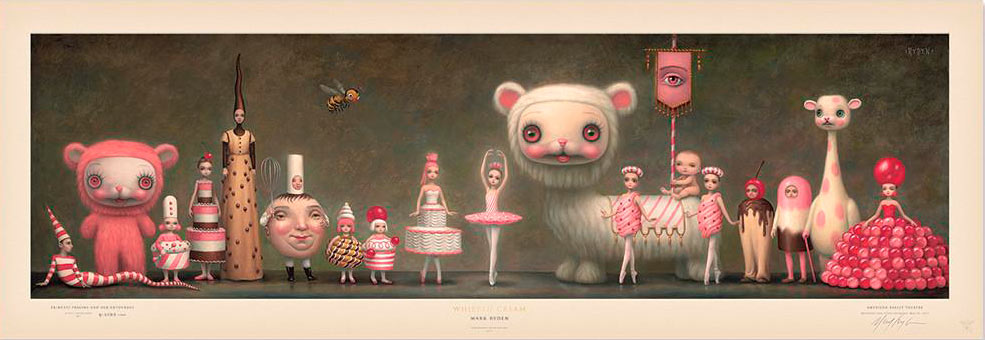
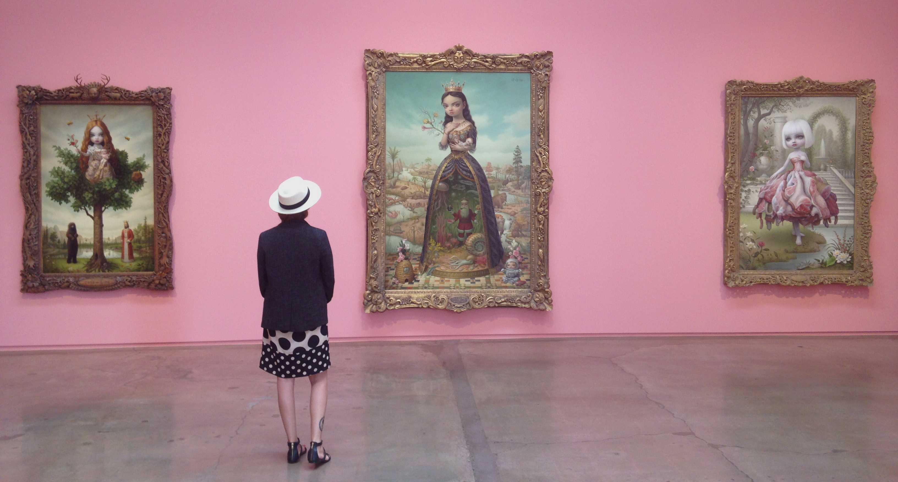
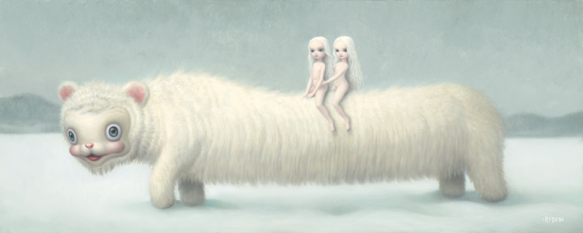

Biographie :
Mark Ryden est un artiste peintre américain, il est né à Medford dans l'Oregon en 1963. Son père peignait déjà, il restaure et customise de vieilles voitures. Il fait partie du mouvement LowBrow, qui est un mouvement d’art underground provenant de Los Angeles, né vers la fin des années 60. C’est un mélange de comix, de graffiti et de musiques punk. Mais il est surtout le chef de file du mouvement moderne pop-surréaliste. Place qu’il partage avec sa femme Marion Peck, Artiste peintre également. Certainement le couple le plus “arty” de Los Angeles ! Il reçoit une licence de l’Art center College of Design en 1987(centre d’art de Pasadena). Depuis il vit et travaille à Los Angeles. Pendant plusieurs années, de 1988 à 1998, Mark Ryden à fait ses armes et à gagner sa vie comme dessinateur de publicité. Jusqu’à ce que son travail soit publié dans le magazine Juxtapoz. Mark Ryden annonce,avec quelques autres (sa femme, Ray Caesar, Eric White), un vrai renouveau dans l’art populaire américain. Pendant ces années de salarié, il dessine une grande quantité d'illustrations, notamment pour l’industrie musicale, où il signe de grand succès comme Love In elevator d’ Aerosmith ou encore Dangerous de feu Michael Jackson’s et bien d'autres encore.
Son style :
Il est connu pour son style particulièrement étrange et parfois dérangeant. Mélangeant contes de fée, univers baroque et déjanté. Une touche de cartoons et de walt disney sous acide. Il puise son inspiration dans ses souvenirs d’enfance et dans l’imagerie esoterique et mythologique. Mais aussi dans Ingres et les classiques de la peinture française. Et plus généralement tout ce qui touche au mystique et aux mystères, typiquement : les vieux jouets, les signes religieux, l’anatomie ou encore les squelettes et les animaux disséqués. Le peintre californien est définitivement un créateur Baroque. Très grand technicien il utilise de nombreuses techniques (graphite, gouaches, huiles, pistolet) et fin analyste de la lumière Mark Ryden réalise des peintures majestueuses, pleine de mélancolie sinistre, semblable à celle de Yoshitomo et Margaret Keane. Ses productions sont toujours reconnaissables au premier coup d'œil tellement son style est marqué et saisissant. Le rose acide qui gouverne nombre de ces tableaux nous ramène toujours à cet univers naïf de l’enfance. Le regard perçant de certaines jeune fille dans ses toiles nous glacent le sang parfois même nous dérange un peu.
Quelques Expositions :
The meat Show:
La première exposition de Mark Ryden se passe en Californie, à Pasadena en 1998 sur le thème de la… viande. La viande est un des thèmes les plus récurent dans le travail du peintre Californien, en effet tout le long de sa carrière, cette image reviendra sans cesse. Mark Ryden cherche à mettre en exergue la déconnexion de notre société contemporaine au sujet de la surproduction de viande. Également comme étant la substance qui nous permet tous de vivre.
Wondertoonel:
Wondertoonel est une exposition rétrospective de milieu de carrières. Cela fait référence au cabinet des curiosités, qui fut coorganisé en 2004 avec le Frye Art Museum de Seattle et le Pasadena Museum of California Art. Cette exposition brisa tous les records précédents de fréquentation au musée de Pasadena et pour cause les nombreuses peintures d’enfants mélancolique et de décors déjanté présentent Mark Ryden comme un génie créatif que rien n'arrête.
The tree show:
Cette exposition ouvre à Los Angeles en 2007 à la Michael Kohn Gallery. Dans cette nouvelle expérience (ou plutôt dans ce show), le peintre Californien explore de nouveaux horizons. Cette fois ci il aborde la relation entre les humains et la nature. L’auteur des toiles explique cela comme ça “ certaines personnes voient dans ces arbres massifs quelque chose de grand et de spirituelle, pendant que d’autres ne voient que de la marchandise qu'ils peuvent vendre”. Il profita de cette exposition pour faire une édition limitée de son exposition au profit d’ associations naturalistes.
The snow Yak show:
Ce show fut installé à Tokyo en 2009, dans la galerie Tomio Koyama. Dans cette exposition les compositions de Mark Ryden vont vers le blanc, celui de la neige, celui du vide et de la sereinité. En effet, cette performance picturale est définitivement plus mûre et maîtrisée que les précédentes. Différents thèmes sont mis en scène dans ce show : de la solitude à la sagesse intérieure en passant par l’introspection. Dans son The Yak show Mark Ryden signe une exposition aboutie, puissante et particulièrement envoutante.
